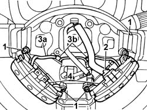

5570T66 module (one) on steering wheel for radio control - r+r
- Path
- Procedures > 55 ELECTRICAL EQUIPMENT > 5570 ACCESSORIES > 5570T car radio and car telephone > 5570T66 module (one) on steering wheel for radio control - r+r
- Kind
- repair procedure (removal / refitting; the operation number is the code)
- Applies to
- all engines; all production periods
- Interactive page
- https://sloeber94.github.io/elrnDB-fPnd/en/#/2753001
Applies to: all engines; all production periods
Applies to: all engines; all production periods
 Removing
Removing
 Refitting
Refitting1. Undo the retaining bolts.
2. Disconnect the electrical connection.
3. Release the wiring (3a) from the attachments (3b) on the steering wheel.
4. Remove the radio control modules.

Applies to: all engines; all production periods
Refitting
RemovingConnect the electrical connection.
Fit the radio control modules and tighten the fixing bolts.
Secure the wiring to the specific attachments on the steering wheel.
Connect the battery terminals.
Check the operation of the Air Bag system using the Examiner or other diagnostic equipment.